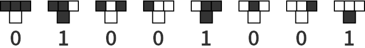

Auf dieser Website ist Platz für das, wofür mein Twitterprofil @charakterziffer nicht ausreicht. Mein Blog ist als Plus zu meinen Tweets gedacht, eben „@cz+“. // Die letzten drei Artikel:
„Unterhalte dich mit anderen Menschen“, so rät es in meiner Twitterserie der Fuchs der Ballerina. Denn im Gespräch mit anderen tun sich neue Blickwinkel auf, man beschäftigt sich mit anderen Themen und kommt dadurch vielleicht auf frische Ideen.
Ins Gespräch kommen, das ist auch die Grundidee meiner #Fuchs-Serie. Die Tweets sind kurze Dialoge (eigentlich nur die zweite Hälfte davon), in denen sich im besten Fall die Perspektive dreht und die Antwort noch einmal über die (nicht genannte) Frage nachdenken lässt.
Hier die letzten zehn Folgen:
◆ „Öffentliche Empörung scheint nicht konstruktiv“, sprach der #Fuchs zur Ballerina. „Aber wenn du einen ungerechten Vorfall siehst und dazu schweigst, unterstützt auch du diese Ungerechtigkeit.“ (#)
💡 „Menschen sind nicht unbedingt wegen ihrer Klugheit berühmt“, sprach der #Fuchs zur Ballerina. „Darum sind die Äußerungen einer bekannten Person nicht zwangsläufig schlauer als deine eigenen.“ (#)
➴ „Nimm dir so viel wie du brauchst“, sprach der #Fuchs zur Ballerina. „Aber auf keinem Fall mehr.“ (#)
↯ „Sicher gibt es Leute, die dich hassen“, sprach der Fuchs zur Ballerina. „Aber nicht du bist die Ursache für den Hass, sondern die beschränkte Weltsicht dieser Leute.“ (#)
🌸 „Klar kannst du dich über Fehler ärgern“, sprach der #Fuchs zur Ballerina. „Vergiss dabei aber nicht, welches großes Glück es ist, dass du deine Kunst derzeit überhaupt vor Publikum aufführen kannst.“ (#)
↯ „Das ist wie beim ‚Überbringer schlechter Nachrichten‘“, sprach der #Fuchs zur Ballerina. „Sei nicht wütend auf diejenigen, welche die Einschränkungen beschließen, sondern lieber auf die, derentwegen sie notwendig sind.“ (#)
⏲ „Sei zumindest ehrlich zu dir selbst“, sprach der #Fuchs zur Ballerina. „Wenn du sagst ‚Dafür habe ich keine Zeit‘, dann meinst du meistens ‚Das ist mir nicht wichtig genug‘ – und das ist völlig in Ordnung so.“ (#)
◕ „Es freut mich, dass dich dein neues Projekt so fesselt“, sprach der #Fuchs zur Ballerina. „Aber bitte gib auf dich Acht: Mach Pausen, bemühe dich um Abwechslung und benutze das Projekt nicht, um wichtige Aufgaben zu ignorieren.“ (#)
⭑ „Natürlich können dich Online-Kommentare ermutigen“, sprach der #Fuchs zur Ballerina. „Versuche dich bei deinen Veröffentlichungen aber nicht von diesem Feedback abhängig zu machen.“ (#)
⚗ „Wenn du neue Ideen suchst, dann ändere dein Umfeld“, sprach der #Fuchs zur Ballerina. „Geh raus die Natur, unterhalte dich mit anderen Menschen, mach dir leise Musik an.“ […] (#)
Wer nun Lust auf weitere „ausgefuchste“ Perspektivwechsel hat, der kann gleich weiterlesen. Die anderen Blogeinträge zu dieser Twitterserie:
Nur noch anderthalb Wochen sind es bis Ostern, da wird’s langsam Zeit für ein wenig Osterdeko. Neben den bunten Eiern sind Hasen ein typisches Symbol fürs Osterfest, da könnten wir doch einen aus Papier falten … Die folgende Anleitung zeigt, wie es geht. Allerdings enthält die Figur einige Tücken und ist darum nicht unbedingt für Anfänger geeignet! Mit etwas Origami-Erfahrung und Sorgfalt sind die ungewohnten Faltungen aber zu schaffen.
Man benötigt ein quadratisches Papier. Es sollte nicht zu klein sein, meines hatte 15 cm Kantenlänge.
1a Das Blatt diagonal falten und evtl. mit der Schere zu einem Dreieck halbieren. Falls das Papier sehr dünn und zweifarbig ist (z. B. Rückseite weiß), genügt es, das Blatt ohne schneiden zu falten (weiße Seite innen). Dann sind Innenohren und Schwänzchen des Hasen später weiß – allerdings sind die Papierschichten dicker und das Falten wird schwieriger!
1b Die beiden spitzen Ecken nach innen auf die dritte Ecke falten.
2. Die offenen Kanten auf die Mittellinie falten, so dass eine Drachenform entsteht.
3. Die eben nach innen gefalteten Flügel öffnen und flachdrücken. Jeweils der obere Knick soll danach auf der mittleren Kante liegen.
4. Nun die gesamte Figur in der Hälfte falten: Die rechte Seite entlang der Mittelachse nach hinten umklappen.
5. Für die Hasenohren die freie Spitze nach innen oben drehen und in der neuen Position andrücken.
6. Dann das gesamte Ohr an der gestrichelten Linie behutsam schmaler falten. Die Kante soll auf dem Eckpunkt zwischen Spitze und Körper liegen und zu ihrem Ursprung spitz auslaufen. Die Schritte 5 und 6 mit dem Ohr auf der Rückseite wiederholen.
7. Nun die eine Seite öffnen und an den Ohren entlang auffalten. Am besten vorsichtig auf der Vorder- und Rückseite vorknicken und erst dann so flachdrücken, dass eine schöne Kopfform entsteht. Dazu die spätere Schnauze ein bisschen nach oben ziehen.
8. Das Schwierigste ist geschafft! Jetzt mit einer Gegenbruchfalte die hintere Ecke zwischen die Papierlagen nach innen falten. Die Kante ergibt den Rücken des Hasen.
9. Die gleiche Ecke mit einer weiteren Gegenbruchfalte wieder herausfalten: Das ist das Schwänzchen.
10. Schließlich noch die vorderste Spitze der Schnauze nach innen falten.
11. Ich empfehle, die beiden Flügel vom Kopf mit einem Klebepunkt am Körper zu fixieren – das sieht besser aus. Jetzt noch Augen aufmalen und die Ohren ein bisschen öffnen.
PS: Entschuldigt die Tomaten im letzten Bild, ich konnte die Schokoladeneier einfach nicht finden!
Außer im Osternest macht sich der Origamihase auch gut als Anhänger für geschmückte Zweige. Wer übrigens bei diesem Hasen verzweifelt, kann es ja mit einer Papierschachtel probieren – die ist prima als ein kleines Nest geeignet. Ich wünsche euch viel Erfolg beim Nachfalten und ein fröhliches Osterfest!
Mich stimmt es traurig, wenn jemand stolz verkündet, in Mathe immer eine Niete gewesen zu sein. Weil das ja nur etwas für Nerds sei, viel zu kompliziert und im Alltag ziemlich unbrauchbar.
Natürlich gibt es wie in jeder Wissenschaft auch in Mathematik superspezialisierte Bereiche, die ohne Fachwissen unverständlich sind und deren Nutzen nur für einen kleinen Bereich von Bedeutung sind. Andererseits finde ich bestimmte Themen der Mathematik praktisch (z. B. Bruchrechnen), verblüffend (z. B. Seil am Äquator verlängern) oder wirklich schön (z. B. Parkettierung).
Besonders faszinierend finde ich, wenn aus eher kleinen Vorgaben ein überraschend komplexes Ding entsteht, das sich nicht intuitiv vorhersagen lässt. Ein Beispiel dafür ist ein zellulärer Automat (englisch: cellular automaton, kurz „CA“).
Wir bauen einen zellulären Automaten
Viel braucht man dafür nicht, eigentlich nur eine große, leere Fläche mit einzelnen Bildpunkten („Zellen“). Unser Automat soll eindimensional werden, das heißt, er arbeitet die Fläche zeilenweise stur von oben nach unten ab. Als Ausgangspunkt färben wir in der ersten Zeile die mittlere Zelle schwarz.
Jetzt kommt die Kleinigkeit, die unseren zellulären Automaten zum Laufen bringt: Wir legen eine Regel fest, wie die Zellen ab der zweiten Zeile eingefärbt werden sollen. Dazu schauen wir uns für jede Zelle immer die drei Nachbarn in der vorigen Zeile an (schräg links darüber, direkt darüber und schräg rechts darüber). Wenn davon zum Beispiel alle drei weiß sind, dann legen wir mal fest, dass die fragliche Zelle in der neuen Zeile schwarz werden soll.
Insgesamt gibt es acht Fälle, wie die drei Zellen in der vorangegangenen Zeile aussehen können. Für jeden dieser Fälle legen wir fest, was mit der Zelle darunter passieren soll. Ich hab zum Beispiel mal folgendes ausgewählt:

Für jede der acht Positionen bestimmen wir entweder 0 (bleibt weiß) oder 1 (wird eingefärbt), womit insgesamt 255 verschiedene Regeln möglich sind. Unsere gewählte Regel lässt sich kurz als 01001001 schreiben. Lesen wir das als Zahl im Binärsystem, können wir das in die Dezimalzahl 73 übersetzen, das ist verständlicher. Nun wird es Zeit für die Praxis, wir starten unseren zellulären Automaten …
Einfache Regel, kompliziertes Ergebnis
Die Regel (zwischen 0 und 255) sieht grafisch so aus:
Und so füllt der Automat damit das Feld:
Oha, es entsteht ein überraschend kompliziertes Muster! Und das Beste: Der Automat hier ist interaktiv. Die grünen Elemente oben lassen sich ändern. Klicke zum Beispiel die grafische Darstellung der Regel an (die acht T-förmigen Kästchen). Du kannst die Nummer einer Regel auch in das Textfeld eingeben (muss zwischen 0 und 255 liegen). Mir gefallen recht gut die Regeln 30, 161 oder 225.
Außer der Regel selbst kannst du noch die Startbedingungen verändern. Klicke weitere Pixel in der ersten Zeile an und färbe sie um. Um verschiedene Ausgangszeilen zu testen, finde ich die Regel 109 recht interessant.
Wer hat’s erfunden? Die Natur!
Noch bevor im Jahr 1940 Stanislaw Ulam und John von Neumann das Konzept zellulärer Automaten vorgestellt und weiterentwickelt haben, hat die Natur die Musterbildung nach Regeln schon längst praktiziert. Zum Beispiel entstehen Zebrastreifen nach einem vergleichbaren Prinzip. Besonders eindrucksvoll finde ich es beim Weberkegel. Das Muster auf dem Gehäuse dieser Muschel sieht der Regel 30 verblüffend ähnlich.
Übrigens bietet die mathematischen Suchmaschine Wolfram Alpha für Elementare Zelluläre Automaten (so wie unserer) eine Übersicht aller 255 Regeln.
Darüber hinaus gibt es noch andere Typen zellulärer Automaten. Bei eindimensionalen Automaten zweiter Ordnung wird zusätzlich noch die Zeile über der direkt darüberliegenden bei der Musterbildung berücksichtigt. Und Automaten mit 2,5 Dimensionen betrachten nicht die Zeile darüber, sondern die Nachbarzellen ringsherum. Das bekannteste Beispiel dafür ist Conway’s Game of Life, wo sich Pixelgruppen wie lebendige Wesen über die Fläche bewegen. Bei anderen Varianten spielen auch verschiedene Farben eine Rolle – es gibt viel zu entdecken!
Das Wort kombiniert Persönlichkeit (Charakter) mit Sachlichem (Ziffer). Zusammengesetzt ergibt sich ein Synonym für Mediävalziffer, eine Zahlenvariante mit Ober- und Unterlängen.
Schriftarten dieses Blogs
Wenn dein Browser eingebettete Schriften (WOFF2) unterstützt, dann liest du die Fließtexte hier in der Source Sans Pro von Paul D. Hunt, erschienen 2012 bei Adobe.
Die Überschriften sind aus der czSlab gesetzt, die ich für dieses Blog gestaltet habe. Sie orientiert sich an Yanones viel ausgefeilterer Antithesis von 2014.
§ 1 Externe Links · Dieses Blog verlinkt auf Websites Dritter. Zum Zeitpunkt der erstmaligen Verlinkung waren dort keine Rechtsverstöße ersichtlich. Da ich keinen Einfluss auf fremde Websites habe, kann ich für deren Inhalte und Gestaltung keine Haftung übernehmen. Sollte ich von Rechtsverstößen erfahren, entferne ich die Verlinkung unverzüglich. Eine ständige Kontrolle der externen Links ist ohne konkrete Hinweise aber nicht zumutbar.
§ 2 Datenschutzerklärung · Mir ist der Schutz deiner Daten sehr wichtig. Deshalb verzichte ich auf Cookies, vermeide möglichst Dienste von Drittanbietern und erhebe so wenige Daten wie es geht. Diese Website kann ohne die Angabe persönlicher Daten genutzt werden.
Die einzige Ausnahme sind Kommentare. Wenn du einen meiner Texte kommentierst, bekomme ich die eingegebenen Daten und eine Zeitangabe per (prinzipiell unsicherer) E-Mail zugestellt. Falls dein Kommentar sachlich zur Diskussion beiträgt, ergänze ich ihn öffentlich sichtbar unter dem entsprechenden Artikel. Dabei sind sämtliche Angaben freiwillig (Name, Website, Mailadresse, Kommentar) – auch anonyme Kommentare sind möglich.
§ 3 Widerspruch gegen Direktwerbung · Die Verwendung meiner Kontaktdaten zur gewerblichen Werbung ist ausdrücklich nicht erwünscht; ich widerspreche hiermit jeder kommerziellen Nutzung und Weitergabe meiner Daten (gemäß § 21 DSGVO). // Über private Fanpost freue ich mich allerdings sehr und antworte darauf mit großem Vergnügen!
 @charak
@charak
![Statisches Feld, wie es mit der Regel 73 gefüllt wird]()
{kind=link}
{kind=link}